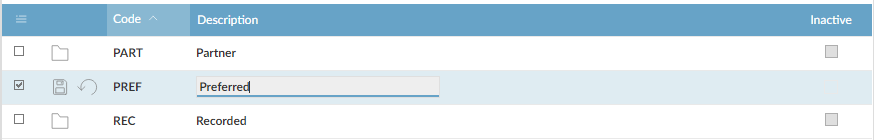
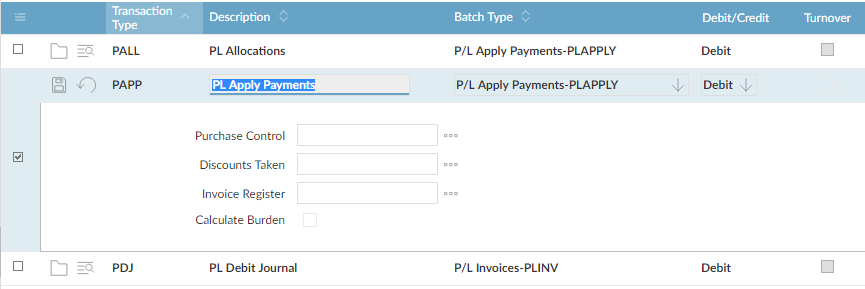

Adding and Updating Records
In general, the methods for adding or updating records in are the same, whatever type of record you are working with: a batch of invoices; details of a company or commodity; or a list of status codes.
Most functions present you with a browse screen, which shows you the records that are already there. uses one of three basic methods to add or update records, depending on the type and amount of information the screen shows:
- Line update opens one or more of the fields on the same line of the browse screen. This is used when there is a limited amount of information on each line.
Line Update (Company Information - Status Codes)

- Detail update opens additional fields that are shown below the browse line. This is used when you need to update information that is not shown on the browse screen itself.
Detail Update ( Transaction Types)

- Screen update displays the fields as a separate page, and may separate the fields onto different tabs. This is used when the record contains a lot of information, as in a customer or record.
Screen Update (Subcontractor Maintenance)

There are also several ways to add or update more than one record at a time:
- Concurrent update allows you to update several records together.
- Multi-update allows you to update selected fields on several records with the same value on each record.
- Bulk add, update and copy allows you to export records to a spreadsheet, update or add to them, and paste them back in to .
These features are not available on all screens.